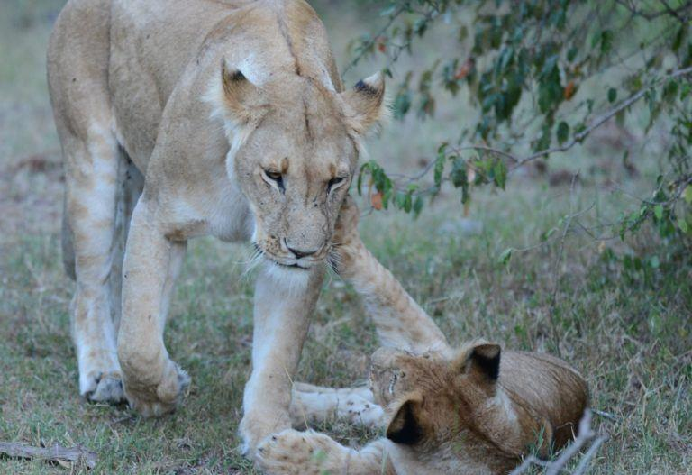
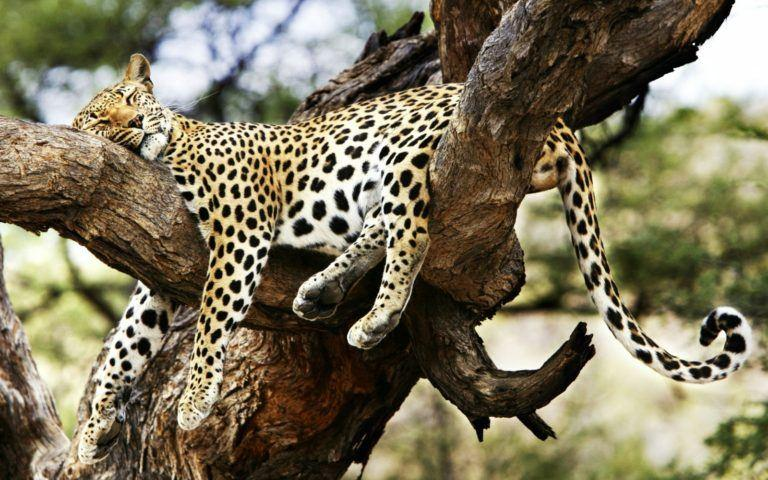
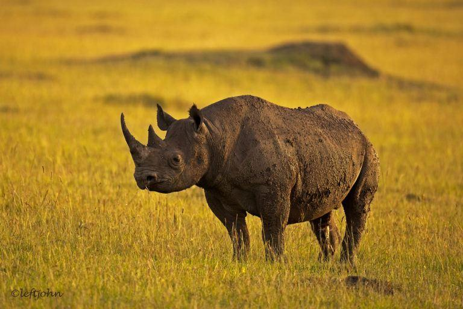
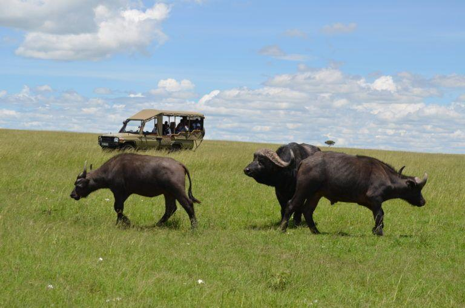
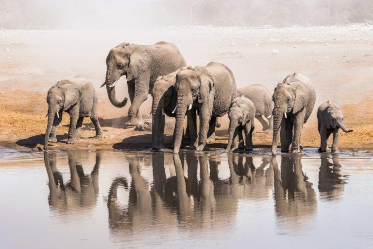

About kenya
The “Big Five” is a term that is used to refer to the 5 African animals that early big game hunters considered most difficult and dangerous animals to hunt on foot in Africa. These animals include the African elephant, lion, leopard, Cape buffalo, and rhinoceros.
here
LION

The lion is often called the king of the jungle because
it is the fiercest and largest predator on land. Lion’s
natural prey includes zebras, impalas, giraffes
and other herbivores especially the wildebeest. Lions tend to group
themselves in pride of 12. Males are easily distinguished
from females with their shaggy manes and are generally much
larger. The females, however, do most of the hunting.
Although they have been known to attack humans, lions are
generally calm animals that do not usually seem threatened by close proximity to people.
LEOPARD

Unlike the lions, leopards are almost always found alone.
They are the most elusive of the big five since they
mostly hunt during the night. The best time to find them is
very early in the morning or at night. During the day you
need to look carefully for these animals who usually can be found
partially camouflaged in the undergrowth or behind a tree
RHINO

Rhinoceros are an endangered species. Even seeing one at a
distance is a rare treat. There are two types of rhinos:
the black and white rhinos. The white rhino gets its name not from
its colour which is really more yellowish grey
but from the Dutch word “weid” which means wide. This is in reference
to the animal’s broad, wide mouth. With its square jaw
and wide lips, they are able to graze. The black rhino,
on the other hand, has a more pointed mouth which it uses to eat leaves from trees and bushes.
White rhinos are much larger than the black rhinos and more common
BUFFALO

The buffalo is perhaps the most dangerous to humans among the big five.
Buffalos are very protective and territorial
and when threatened they are known to charge with astonishing speed.
The buffalo are mostly found in groups and large herds.
They spend most of their times grazing the savanna and floodplains.
When approached the dominant bulls will tend to take an
aggressive vigilant stand while the other adults gather around the calves to protect them
ELEPHANT

This is the largest land animal in the world. Some of the adults can reach
up to 3 meters in height. The adult males, bull elephants,
are usually solitary creatures while females are generally found in groups led
by a matriarch surrounded by younger females and their offspring.
Although they are referred by many as gentle giants, elephants can be very dangerous
and have been known to charge at vehicles, humans and other animals when they feel threatened
LEOPARD

Unlike the lions, leopards are almost always found alone.
They are the most elusive of the big five since they
mostly hunt during the night. The best time to find them is very
early in the morning or at night. During the day you
need to look carefully for these animals who usually can be
found partially camouflaged in the undergrowth or behind a tree.